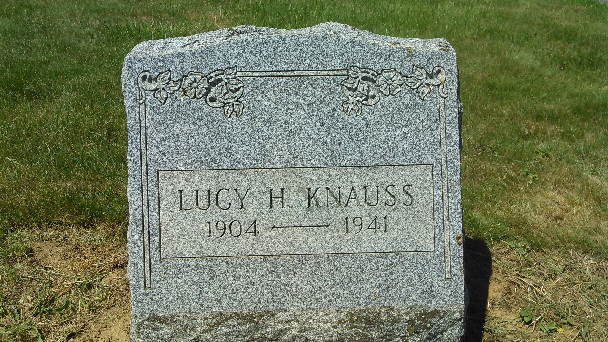
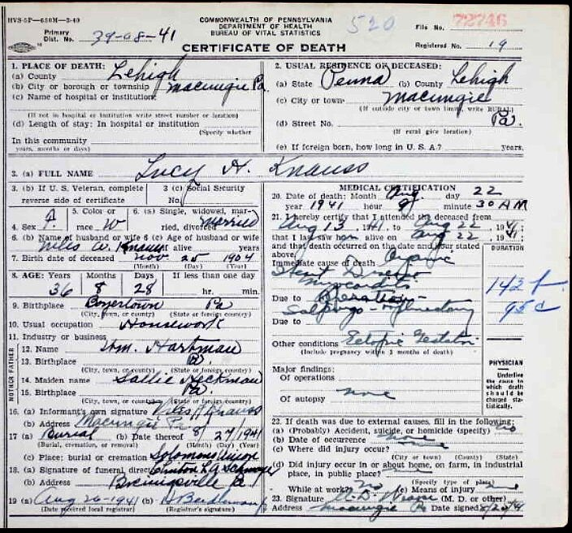
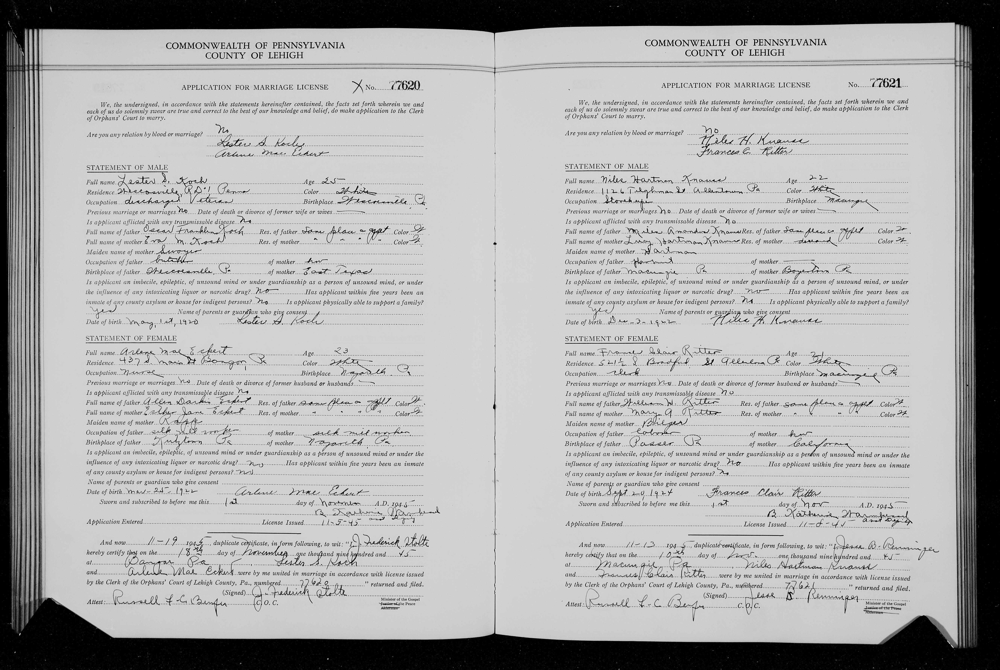

Lucy H. HARTMAN
born 25 Nov 1904
died 22 Aug 1941 at Macungie, PA
Niles Amandus KNAUSS
born 12 Oct 1893 at Macungie, PA
died 25 Dec 1982
married 1921
Niles Hartman KNAUSS
born 03 Dec 1922
died 22 Apr 1988
Frances Claire RITTER
born 21 Sep 1924 in Macungie, PA
died 24 May 2009
married 10 Nov 1945
Gunner Dixon KNAUSS
born XX
died XX
Nancy A. KNAUSS
born XX
died XX
Lucy H. HARTMAN was an aunt of Titus HARTMAN. She is buried at Solomons UCC Cemetery in Macungie, PA.
  